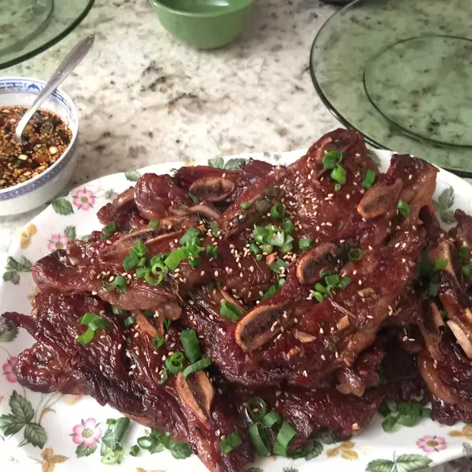

Spicy, Savory Korean Ribs

Description
The spiciest. The savoriest. And, most importantly, the best goddamn ribs you'll ever eat. Make sure to pick up this recipe, as it will be hard to put down after you get a taste of the authenic, amazing Korean Ribs.
Ingredients
-
¾ cup soy sauce
-
¾ cup water
-
3 tablespoons white vinegar
-
2 tablespoons sesame oil
-
½ large onion, minced
-
¼ cup minced garlic
-
¼ cup dark brown sugar
-
2 tablespoons white sugar
-
1 tablespoon black pepper
-
3 pounds Korean-style short ribs (beef chuck flanken, cut 1/3- to 1/2-inch-thick across bones)
Directions
-
Pour soy sauce, water, vinegar, and sesame oil into a large, non-metallic bowl. Whisk in onion, garlic, brown sugar, white sugar, and pepper, whisking until sugars dissolve. Submerge ribs in the marinade. Cover the bowl and refrigerate 7 to 12 hours; the longer, the better.
-
Preheat an outdoor grill for medium-high heat.
-
Remove ribs from marinade and shake off excess; discard marinade.
-
Cook on the preheated grill until the meat is no longer pink, 5 to 7 minutes per side.
-
Profit??